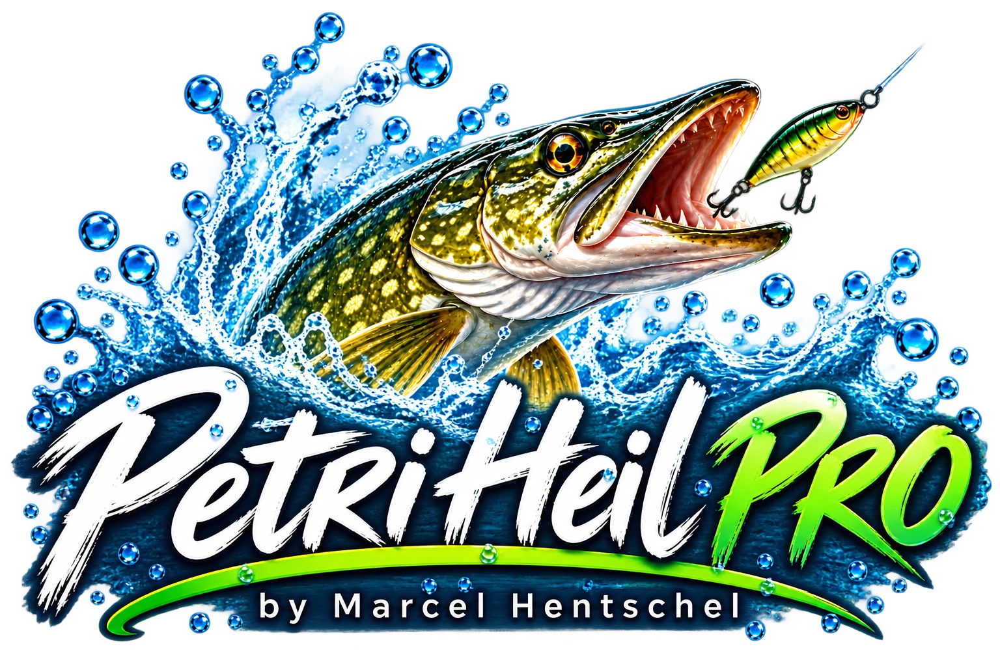

BEISSINDEX · QUALITATIVE EINSCHÄTZUNG
Keine Bedingungen angegebenWähle deine Bedingungen im Beißindex.
Beißindex einstellenKeine wissenschaftlich validierte Fangvorhersage.

Angeltag · Fangbuch · Angelplätze · alles verbunden
INTELLIGENTE STARTSEITE
Deine Daten bleiben auf diesem Gerät. Wetter und Pegel werden nur auf deinen Wunsch abgerufen.
BEISSINDEX · QUALITATIVE EINSCHÄTZUNG
Keine Bedingungen angegebenWähle deine Bedingungen im Beißindex.
Beißindex einstellenKeine wissenschaftlich validierte Fangvorhersage.
Kein laufender Angeltag
Deine registrierten Fänge
GPS-Koordinaten, Bilder, Tiefe und Fanghistorie
Offline-Paket noch nicht geprüft
Vollständige DiagnoseNur nach ausdrücklichem Abruf. Die Ortskoordinaten werden an Open-Meteo übertragen.
Kein Live-Wetter abgerufen.
Messstationen aus PEGELONLINE – nur nach deinem Suchauftrag, nicht automatisch.
Keine Messwerte abgerufen.
Gezeiten / importierte TabellenAngelzeit erfassen, Köder und Fänge verknüpfen, Notizen und Fotos zum Tag sichern.
GPS nur nach Freigabe. Beginne einen neuen Angeltag erst nach dem Abschluss des bisherigen.
Druck/PDF nutzt die Funktion deines Browsers. Fotos sind nur im verschlüsselten Gesamtbackup enthalten, wenn die Fotodatenbank erfasst wurde.
Die Pro- und Plus-Fänge bleiben im jeweiligen Originalspeicher. Neue Fänge werden automatisch verknüpft; frühere Fänge kannst du ohne Datenmigration ausdrücklich nachträglich zuordnen.
Die Originaldaten bleiben unverändert, außer der gewählten Zuordnung.
Eigene Angelplätze, GPS, Fanghistorie und Bilder verbunden mit den vorhandenen Offline-Geodaten.
Offline-Übersicht
Online-Karten werden erst nach deiner Zustimmung bei OpenStreetMap bzw. Esri geladen. Die Anbieter erhalten dabei die angezeigte Kartenposition und deine IP-Adresse. Kein automatischer Kacheldownload. Offline bleiben die vereinfachte Übersicht und eigene Tiefenpunkte verfügbar.
Offline-Übersicht aus historischen Geodaten. Keine Straßenkarte, Gewässergrenzen, Tiefenmessung oder Navigationsanweisung.
Auf die Karte tippen, um Koordinaten auszuwählen.
Entfernte Angelplätze bleiben zunächst im Archiv. Fänge, Angeltage, Tiefenpunkte und Fotos werden dabei nicht gelöscht.
Nur von dir eingegebene Werte – keine automatische Sonar-Messung, keine amtliche Bathymetrie. Hellblau unter 2 m, Mittelblau 2–5 m, Dunkelblau über 5 m (schematische Einteilung).
Tiefen werden geladen …
Alle Tiefenpunkte sind im lokalen Speicher und Bestandteil der verschlüsselten Gesamt-Datensicherung. CSV/JSON enthält keine Fotos.
Karten-Attribution: © OpenStreetMap-Mitwirkende (ODbL) · Satellitenbilder: Esri, Maxar, Earthstar Geographics und weitere Esri-Datenanbieter; Verfügbarkeit und Nutzungsrechte abhängig vom Anbieter. Beide Ansichten nur online und nach Zustimmung. Offline: bestehende geografische Übersicht (GSHHG/WDBII).
Noch kein Angelplatz gewählt.